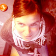
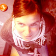

Crew
 



Director
MARIEKE SCHELLART
Marieke Schellart (1973) is a graduate Industrial Design Engineer. She worked several years as
an art director for international advertising agencies. However after a while she felt the need to
tell social stories. Eggs for Later is her debut film, a personal documentary about her struggle
with the ticking biological clock and her quest to extend fertility. In the Netherlands the film
caused a huge public and political debate about ethics and legislation on social freezing. The awarded documentary was screened at 25
International Film Festivals and was broadcast on TV in 9 countries.
Camera & Editing
ANNEKE DE LIND VAN WIJNGAARDEN
Anneke (1971) is a director, DOP and editor. She made several documentaries for youth
television: How Nikita got herself a horse, Titties, Danny's Parade. Her hand-held camera style is close but never interfering, she knows how to create an intimate atmosphere that allows subjects to unveil themselves. In 2008 Danny's Parade was awarded the Beeld & Geluid Award for best documentary.www.delindvanwijngaarden.com
Producer
REINETTE VAN DE STADT
Reinette (1974) graduated from the Dutch Film & Television Academy in 2000. She worked on various productions, including Manderlay of Lars von Trier. In 2003 she started Trueworks, her own production company. She produced 6 documentaries and 4 Shorts. Missing by Jochem de Vries was selected by the Cannes Film Festvial 2009.www.trueworks.nl
Music
SONJA VAN HAMEL
Sonja (1971) graduated in 1999 from the Gerrit Rietveld Art Academy. She makes music, graphic design and drawings. Sonja has made many albums, formerly as half of the pop duo BAUER and now as a solo artist. Eggs for Later is the first documentary she's made music for. Her sensitive and dreamy pop songs fit well with the intimate feminine style of Eggs for Later. Some of the tracks are also on her lastest CD that was released in 2011.
www.sonjavanhamel.nl
Sound
Arno van Beest - Bas van ZomerenEditing advice
Govert JanseSound editing
Diederik Idenburg, Rob van de SchootbruggePost production
PostofficeColour grading
Daphne MaiernaGraphical design
Sander PlugWebsite
Fabrice Koopman - Filip MertensProducer NCRV
Yolande van der BlijCommisioning editor NCRV
Jelle Peter de RuiterThanks to NOS Journaal, RTL Nederland, Andere Tijden, VPRO
This film was supported by
Rathenau Instituut, Stichting Biotechnologie Nederland & VVAO
Eggs for Later is a Trueworks production in co-production with NCRV